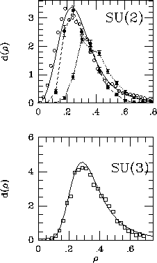

Solid points: Size distribution from the lattice, for different
lattice spacings. The distribution for small instantons is
affected by lattice artefacts, instantons falling through
the cracks in the lattice.
Open points: Instanton liquid calculation. The size distributin
is regulated by a repulsive instanton-antiiunstanton interaction.
Solid lines: A parametrization using a non-perturbative beta
function
A time honored problem with instanton calculations in four dimensional
gauge theories is the fact that the semi-classical calculation of the
rate gives a size distribution which diverges for large instantons.
There is nothing wrong with that, large instantons are not semi-classical,
so the calculation is not to be trusted in that regime. However, we do
not know how to do a better calculation (although we sure keep on
trying). It's comforting to know that nature seems to know how to
solve the infrared problem, as exemplified by this lattice result.
Source: Michael and Spencer, Phys. Rev. D